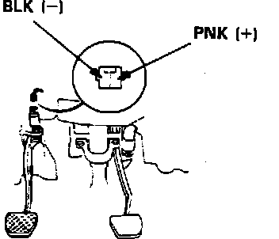

Clutch Switch Signal
Clutch Switch Connector Identification:

1. Install test harness between ECU and harness connector. If test harness is not available, carefully backprobe wires at ECU connector.
2. Disconnect 2 wire clutch switch connector under dash.
3. With ignition on, measure voltage across clutch switch harness connector.
Battery voltage, proceed to step 6.
No battery voltage, proceed to next step.
Electronic Control Unit Pin And Connector Identification:

4. Measure voltage across ECU terminals B9 and A18.
Battery voltage, proceed to next step.
No battery voltage, replace electronic control unit. End of test.
5. Repair open PNK or BLK wire(s) between ECU connector and clutch switch.
6. Check for continuity across clutch switch terminals.
Continuity, replace clutch switch.
No continuity, proceed to next step.
7. Depress clutch pedal fully and check for continuity across clutch switch terminals.
Continuity, proceed to next step.
No continuity,replace clutch switch. End of test.
8. Clutch switch operating normally. No further testing required.